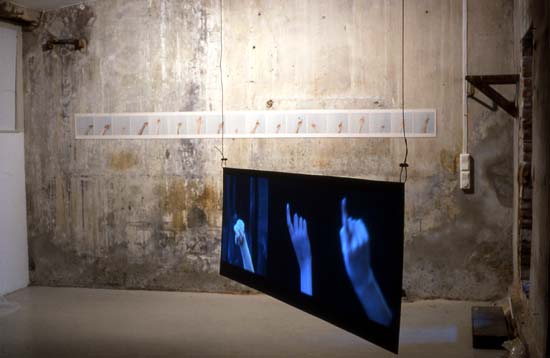

Signpainters. Video and photo-installtion.
PLAY A SHORT EXCERPT >>
|  |
b |
PRESSEMELDING (PRESSRELEASE IN NORWEGIAN) Bjørka Prosjektrom, Oslo © 2003 DEN TEGNSKAPENDE KROPPEN Bjørka har gleden av å invitere til utstilling med Katja Høst. I denne utstillingen presenteres både fotografier og video, som tilsammen utgjør verket Sign painters. I Høsts kunstnerskap er menneskelig adferdsmønstre et sentralt tema, med det offentlige rom som utgangpunkt. Hun har nå flyttet blikket til klasserommet og konvensjonene man finner der. I interaksjonen med verden rundt oss bruker vi hele tiden kroppen til å lage tegn, enten det er ubevisst eller bevisst. Hender som fyker i været er fysiske tegn på ønsket om å ta plass og være premiss-leverandør i sosiale sammenhenger. Katja Høst (f. 1972) er utdannet ved bl.a. Kunsthøgskolen i Bergen, avdeling for fotografi (1999). Hun har tidligere deltatt i en rekke gruppeutstillinger i Bergen og Oslo. Hun er for tiden også aktuell på Høstutstillingen på Kunstnernes Hus i Oslo. Informasjonsansvarlig Claudia C. Sandor |
|